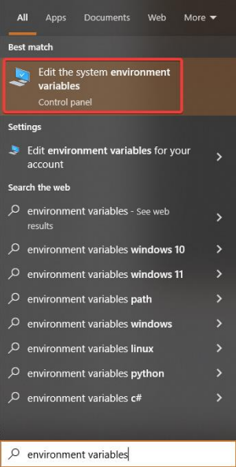
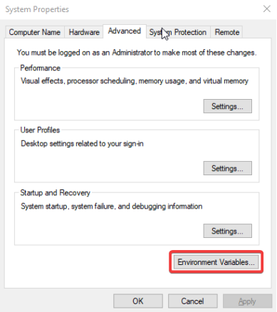
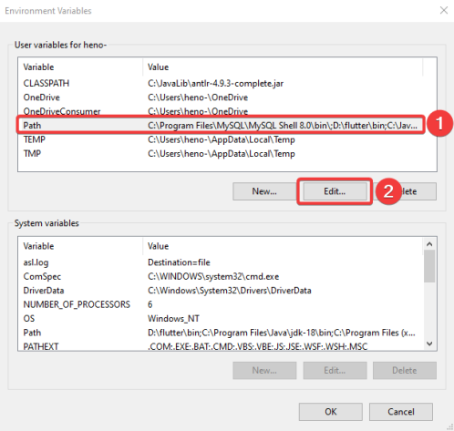
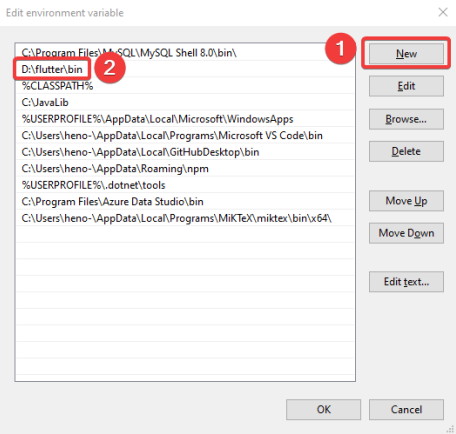
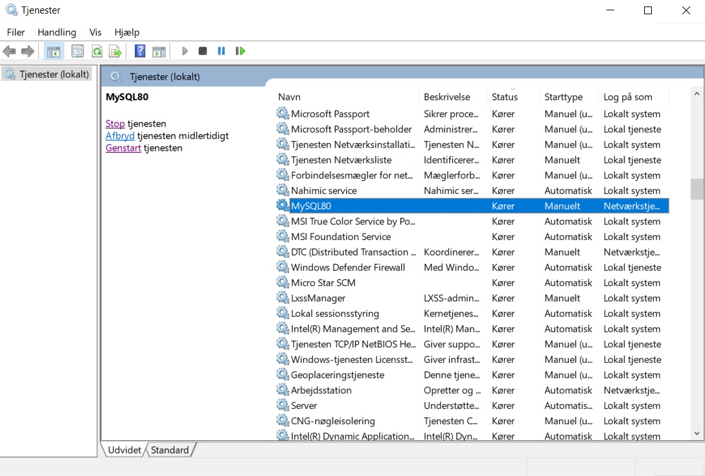
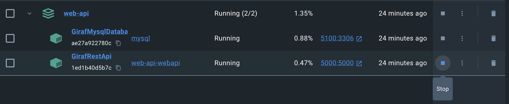
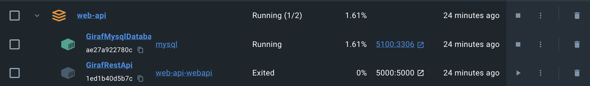
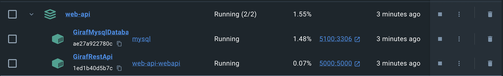

Setup¶
Word or PDF Guide¶
Here are two hyperlinks leading to the same guide for setting up the following repositories: Weekplanner, API-Client and Web-API. Word or PDF format.
Weekplanner¶
Installing the flutter framework¶
Download the flutter framework from Flutter. The GIRAF project is guaranteed to work with version 3.3.8.
Just follow the installation guide on the flutter website and you should be good to go.
If you are using Android Studio, IntelliJ or Visual Studio Code, be sure to install the flutter and dart plugins to get full flutter support.
Adding flutter to your path¶
Adding flutter to your path is highly recommended as it allows you to run flutter commands from any terminal window. How to do this is very dependent on your OS so make sure to check the flutter installation guide on how to do this on your setup if you did not do it already as part of your installation or do the following:
-
In Windows, editing environment variables is quite simple. Open the windows menu or the settings menu and search for environment variables.

Here click on the button in the bottom labeled “Environment variables...”

This will open a new window with two lists of environment variables, for the system and for the user. Here it is possible to add new and edit existing variables
Most of the variables related to the GIRAF project should be in the upper list, specific for your user. To add a directory to your PATH environment variable, you need to locate the variable Path in your user variables and edit it, then add a new line with the path to the directory you want to add.

If a variable named Path does not exist in the list of user variables, click the button New and create one.
If your Path variable exists but only has one value, you can add another value by editing the variable and adding the next value separated by a semi colon.

Finally, when you reach this point, you create a new path, which has the location of your flutter/bin folder. This now allows you to run flutter commands from any location.
-
On Linux (Ubuntu) there are many ways to edit environment variables. One of the simpler is to open a terminal and edit the file etc→environment with your favorite editor e.g., emacs, nano, vim, etc. e.g.,
sudo nano /etc/environment. Add or edit the variables that you need. There is one variable per line of the formNAME="value1:value2:value3". Save and exit, then reboot your PC for it to work -
How to set environment variables on Mac depends on which shell your terminal is using. Open a terminal and type
echo $SHELLand it will tell you which you are using, typically Bash or Z Shell. Use your favorite text editor to edit the file$HOME/.bashrcif you’re using Bash and$HOME/.zshrcif you’re using Z shell, e.g.sudo nano ${HOME}/.zshrcThis file might not already exist, so this might create it, thus opening an empty file. This is OK. Add and edit the variables you need. There is one variable per line of the formNAME="value1:value2:value3”. Save and exit and reboot your PC.
NB: If the file did not already exist or did not already contain the PATH environment variable, you
need to add it as PATH="${PATH}:your-new-path”, to add paths instead of replacing them.
Verify¶
You can always verify that your changes work by opening a terminal and typing echo $var_name
e.g., echo $PATH or echo $JAVA_HOME for Linux and Mac. For Windows using PowerShell,
type echo $Env:var_name e.g. echo $Env:Path
Installing a java SDK¶
Android needs a java JDK to compile and run. The weekplanner project currently does not work with java newer than version 11, which can be downloaded here, for MacOS, download the Linux version.
After installing java 11, make sure to set your JAVA_HOME environment variable to the java root directory, i.e. .../jdk-11, and put java in your PATH environment variable, i.e. .../jdk-11/bin, follow same steps as above.
You might have to restart your PC or IDE to make the new environment variables work.
Clone the weekplanner repository¶
In Android Studio, choose project from version control and enter the GIRAF weekplanner url: https://github.com/aau-giraf/weekplanner.git
On other IDE´s, you can use GitHub’s desktop app to clone the repository, after which you can open it with your own specified IDE.
NB: Note that you will need to be added to aau-giraf GitHub organization to be able to contribute.
NB: Android Studio has built-in GitHub support if you link it to your GitHub account.
Download packages¶
Download all necessary packages for the project by running flutter command flutter pub get in
a terminal window at the project root i.e., …/weekplanner
API-Client¶
-
Make sure you have the flutter framework installed
-
Clone the api client repository. In your IDE, create a new repository, in Android Studio choose project from version control and enter the api_client url:
https://github.com/aau-giraf/api_client.git -
Run the flutter command
flutter pub getin a terminal window at the project root. -
Set the weekplanner to point at your branch. If you want to test out your changes to the api_client, open weekplanner→pubspec.yaml in the weekplanner, find the api_client entry and change ref from
developto your branch e.g.feature/73. Then run flutter pub get again in the weekplanner project to update the package.
NB: due to caching, simply running pub get is not always enough. If the package is not properly updated, delete the build directory from the weekplanner project directory and build the application again. It is possible to check the current version of api client your local weekplanner uses in Android Studio by opening External Libraries → Dart Packages
NB: Do not push this change to pubspec unless you know what you are doing, and make sure to change it back to develop before merging.
Web-API Setup¶
Make sure you have a C# compatible IDE e.g., Microsoft Visual Studio or JetBrains Rider. However, if you do not need to develop on the web-API, and are only interested in running the web-API this can be done following this Section Running the web-Api. Otherwise, follow the guide.
Local Development¶
For local development of the web-API there exists two solutions using a local instance of MySQL, or using the Docker application.
The first solution is following the guide installing .NET Core and installing MySQL
The other solution is installing .NET Core, and then use the Docker applications mysql container as the database, in this way you do not have to install MySQL, only Docker.
Clone the web-api repository¶
In your IDE, create a new repository, in Rider select Get from version control and enter the web-api url: https://github.com/aau-giraf/web-api.git
Installing dotnet core¶
The web-api is a dotnet core web app that runs on dotnet core 8.0.x so make sure that you have a compatible version installed. It can be downloaded here
Installing MySQL (Optional)¶
The web api runs a local instance of a MySQL server.
Install MySQL server 8.0. MySQL workbench and MySQL shell are useful but optional.
During the setup, make sure to give the root user a password you can remember e.g., ”password” as this is only a development instance. Additionally, create a user with username “user” and password ”password” that have administrative rights.
NB: Make sure that your MySQL server is running (this is where MySQL workbench is useful)
NB: If you are not able to restart or turn the server on/off through the MySQL workbench then the way you do it is through locating the windows search bar and writing services where you will need to locate MySQL80 as seen below and restart it by right clicking it and pressing stop or going to properties and selecting Manual if it is set to Automatic and pressing on the button that says Stop.

Establish a query interface to your database¶
Many IDE’s support a GUI connection to databases e.g., Visual Studio and Rider.
What worked and was used by a lot of groups was Visual Studio Code's MySQL extension
Select the database tab, add an instance, and select MySQL. Use the connection settings:
Host: localhost
Port: 3306
Username: root
Password: password
Database: giraf
This should establish a connection to your database that allows you to manually edit the tables and schemas.
Local Development with Docker(Optional)¶
First follow the steps in Running the web-API with Docker.
Next shutdown the web-api container within the application, in docker desktop this can be done, by clicking the stop icon.
Shown here:

After doing that they api should have stopped and you should see the following:

Last step is to open your IDE, locate the LocalDocker.AppSettings.json file in the GirafAPI project. Copy the connection string and paste it into the Development.AppSettings.json connection string, if you copy the connection string make sure to change the server to localhost, and change the port to 5100.
Another approach would be to change the launchsettings, specifically the ASPNETCORE_ENVIRONMENT to LocalDocker
Now you should be able to develop in your IDE, run the API directly in the IDE, and utilize the Docker MySQL container.
Running the web-API with Docker¶
Start by downloading the Docker, this can be either the Docker Engine itself (this requires more knowledge of Docker), or the easier alternative Docker Desktop (Linux, MacOS and Windows) Download Docker Desktop.
Ensure that you cloned the web-API repository from this section Clone the web-API.
In your terminal navigate to the cloned web-API folder on your local machine.
In the terminal you can run one of 2 commands:
docker compose updocker compose up -d
The first command runs the docker compose from the terminal and effectively occupying the terminal. This can be avoided using the second command as this runs the docker compose in detached mode, such that the terminal can still be used for other things.
Open Docker Desktop and confirm the application is running:

You are now able to use the API, which is located on http://localhost:5000.
Trouble shooting¶
Database migration¶
A common issue could be the database schema not migrating, if this is an issue you can do it manually like this:
- Open a terminal and navigate to the …
web-api\GirafAPIfolder. - Run
dotnet tool install --global dotnet-ef, if you do not have the tool dotnet-ef installed - Run dotnet restore
- Run dotnet ef database update
- Run dotnet run --sample-data
Using Swagger¶
Using Swagger to test endpoints
- Make an Account/Login request with valid login-info (username: Tobias, password: password)
- Copy the data field containing the token.
- Click on the green Authorize button (Or the padlocks).
- Write bearer [your-token] (note the space) in the input-field.
- Click Authorize and close the pop-up.
- You are now authorized and can make authorized requests.